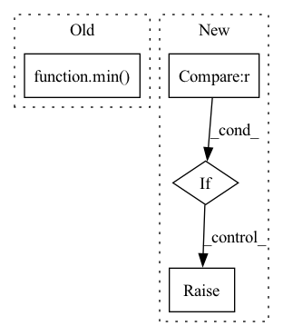

Pattern ID :311
Before Change
A[np.tril_indices(A.shape[0])] = 1.0
A_comp = sp.coo_matrix(1 - A)
sampled_edges = np.stack([A_comp.row, A_comp.col], axis=1)
num_sampled_edges = min( exclude.shape[0], sampled_edges.shape[0])
idx = np.random.choice(
sampled_edges.shape[0], num_sampled_edges, replace=False
)
return sampled_edges[idx]After Change
if isinstance(exclude, torch.Tensor):
exclude = exclude.cpu().numpy()
if num_edges > int((n * (n - 1) / 2.0)) :
raise ValueError(
f"Cannot sample more than ({n} choose 2)="
f"{int(n * (n - 1) / 2.0)} edges. "
f"(requested: {num_edges} edges)"In pattern: SUPERPATTERN
Frequency: 3
Non-data size: 4
Instances Fragment ID: 2130816
Project Name: cvxgrp/pymde
Commit Name: 96ac62de86f71c9a25d82711b47de4732cfd6266
Time: 2021-03-26
Author: akshaykagrawal7@gmail.com
File Name: pymde/preprocess/preprocess.py
M Class Name: AnonimousClass
N Class Name: AnonimousClass
M Method Name: sample_edges(4)
N Method Name: sample_edges(4)
M Parent Class:
N Parent Class:
M File Name: pymde/preprocess/preprocess.py
N File Name: pymde/preprocess/preprocess.py
M Start Line: 30
M End Line: 44
N Start Line: 32
N End Line: 48
Before Change
def next(self):
frac = min(self.curr, self.duration) / self.duration
self.curr = min( self.curr + 1, self.duration)
return (self.end_value - self.start_value) * frac + self.start_value
def reset(self, idx = 0):
self.curr = idxAfter Change
if self.curr_iteration >= self.tot_iterations:
return self.final_val
if self.schedule_type == "linear" :
return self.initial_val + (self.final_val - self.initial_val) * (self.curr_iteration / self.tot_iterations)
elif self.schedule_type == "identical":
return self.initial_val
else:
raise NotImplementedError Fragment ID: 2130817
Project Name: x35f/unstable_baselines
Commit Name: 11b41d1ccbe38af41c0c391322947e7146af2816
Time: 2021-03-30
Author: 1621322691@qq.com
File Name: common/scheduler.py
M Class Name: Scheduler
N Class Name: Scheduler
M Method Name: next(1)
N Method Name: next(1)
M Parent Class:
N Parent Class: object
M File Name: common/scheduler.py
N File Name: common/scheduler.py
M Start Line: 10
M End Line: 12
N Start Line: 12
N End Line: 21
Before Change
s.set_epoch(epochs)
if args.steps > 0:
train_batches_limit = min( train_batches_limit, args.steps - steps)
// handle step every.
reminder_to_drop = train_batches_limit % args.step_every
if reminder_to_drop:After Change
logger.info(
f"breaking early since can"t complete a full step with {args.step_every} gradient accumulations.")
break
elif SMALLER_LAST_BATCH_POLICY == SmallerLastBatchPolicy.ProportionalStep :
logger.info(
f"Got reminder of {reminder_to_drop} micro batches. Will take proportional {reminder_to_drop/args.step_every} last step")
else:
raise NotImplementedError(f"Unknown SMALLER_LAST_BATCH_POLICY, {SMALLER_LAST_BATCH_POLICY}")
else:
train_batches_limit_to_use = train_batches_limit
Fragment ID: 2130814
Project Name: saareliad/ftpipe
Commit Name: 8e69008ad7d0abb9b9773cc2da632e24de50270b
Time: 2020-09-10
Author: saareliad@campus.technion.ac.il
File Name: train.py
M Class Name: AnonimousClass
N Class Name: AnonimousClass
M Method Name: training_loop(11)
N Method Name: training_loop(11)
M Parent Class:
N Parent Class:
M File Name: train.py
N File Name: train.py
M Start Line: 13
M End Line: 128
N Start Line: 20
N End Line: 162